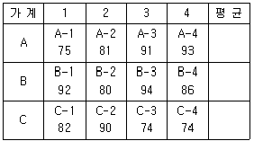
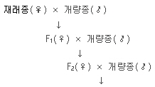
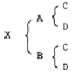
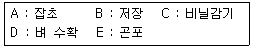

축산기사 (2006-05-14 기출문제)
1과목: 가축육종학
1. 다음 젓소의 여러 형질 중 유전력이 가장 낮은 형질은?
- 유량
- 유지방율
- 일당증체
- 번식간격
(정답률: 63%)

2. 염색체의 핵형 분석에서 염색체의 형태가 가장 뚜렷한 시기는?
- 간기
- 전기
- 중기
- 말기
(정답률: 68%)
3. 각각의 부모에서 온 유전자가 합쳐져 새로이 태어난 자속의 유전자형을 형성한 유전자들의 값을 무엇이라고 하는가?
- 육종가
- 우성편차
- 평균
- 표현형가
(정답률: 67%)
4. 돼지의 증체율을 개량하기 위해 3개의 전형배 가계를 능력검정하였다. 전형매 가계는 각각 4마리의 수퇘지로 이루어 졌으며, 이들의 번호와 154일령 체중은 다음과 같다. 검정된12마리의 수퇘지 중 4마리만을 종돈으로 이용하고 나머지는 도태하고자 한다. 가계내 선발에 의하여 선발되는 개체의 번호는?

- A-3, A-4, B-1, B-3
- A-4, B-1, B-3, C-2
- B-1, B-2, B-3, B-4
- A-4, B-1, B-3, B-4
(정답률: 55%)
5. 무각적색(PPRR)과 유가백색인 shorthorn종 육우를 교배하여 생산한 F1(PpRr)의 표현형이 무각 조모색으로 나타났다. 멘델이 세웠던 가설 중 어느 것에 모순되는가?
- 특정 형질의 발현을 조절하는 유전인자는 한 쌍으로 되어있다.
- 한 쌍의 유전인자는 양친으로부터 하나씩 물려받은 것이다.
- 생식 세포가 만들어질 때 유전인자들은 분리된 단위로서 각 배우자에게 독립적으로 분배된다.
- 한쌍의 유전인자가 서로 다를 때 한 인자가 다른 인자를 억제시키고 그 인자만이 발현된다.
(정답률: 62%)
6. 가축의 경제형질의 변이(variation)를 설명한 것 중 옳지 않은 것은?
- 환경변이와 유전변이로 구분된다.
- 변이가 크면 선발이 용이하다.
- 동형접합체가 많은 집단에서 변이가 크게 나타난다.
- 변이는 강력한 선발로서 감소된다.
(정답률: 60%)
7. 이유 후 성장률과 가장 밀접한 관계가 있는 고기소의 경제형질은?
- 번식 효율
- 생시 체중
- 사료 효율
- 도체 품질
(정답률: 53%)
8. 완두관을 가진 닭과 장미관을 가진 닭을 교배할 때 F2에 있어 단관이 나타나는 비율은?
- 1/16
- 2/16
- 3/16
- 4/16
(정답률: 58%)
9. 가축의 발생 또는 발육과정에서 일전한 시기에 생리적 또는 물리적 결함을 초래하여 개체를 죽게 하는 유전자를 무엇이라 하는가?
- 복다유전자
- 동의유전자
- 치사유전자
- 보족유전자
(정답률: 80%)
10. 염색체에 대한 설명 중 틀린 것은?
- 동물의 염색체는 염색체의 크기, 모양, 중심립의 위치 등이 같ㅇ은 2개의 염색체 쌍으로 되어 있다.
- 포유 동물의 성염색체에는 x와 y염색체가 있으며, 자손의 성별은 어머니로부터 물려받는 성염색체에 의해 결정된다.
- 포유 동물의 X 염색체는 Y 염색체 보다 크기가 크다.
- 조류에서 ZW의 성염색체를 가진 대체는 암컷이다.
(정답률: 71%)
11. 어미소와 딸소의 유량을 조사하여 어미소 유량에 관한 딸소 유량의 회귀, 즉 모낭간 회귀를 구한 결과 그 회귀계수(b)가 0.125 였다면 이 결과로 추정할 때 유전력은 얼마인가?
- 0.125
- 0.25
- 0.375
- 0.50
(정답률: 73%)
12. 돼지의 경제적 개량 형질이 아닌 것은?
- 체형
- 이유시 체중
- 복당 산자수
- 도체의 품질
(정답률: 53%)
13. 산란계 경제 능력검정의 조사 형질이 아닌 것은? (문제 복원 오류로 2, 3번 보기 내용이 정확하지 않습니다. 정확한 보기 내용을 아시는 분께서는 오류신고 또는 게시판에 작성 부탁드립니다.)
- 수정율
- 성성숙 일령
- 성성숙 일령
- 사료 요구율
(정답률: 45%)
14. 한쪽 성에만 발현되는 형질의 선발을 위해서 사용되는 가장 효과적인 방법은?
- 개체 선발
- 혈통 선발
- 형매 검정
- 후대 검정
(정답률: 55%)
15. 다음 형질중 변경 유전자의 작용에 의하여 발현되는 것은?
- 닭의 우성 백색과 열성백색 깃털
- 집토끼의 흑색과 백색무늬
- 돼지의 적색과 백색 피모
- 고기소의 조모와 적색 피모
(정답률: 56%)
16. 한우의 개량 방향이 아닌 것은?
- 사료이용성의 우수
- 도체품질의 우수
- 조기발육의 양호
- 분만가력의 증가
(정답률: 64%)
17. 다음은 어떤 교배법을 나타낸 것인가?

- 누진교배
- 2품종교배
- 계통교배
- 복교배
(정답률: 73%)
18. 난질 중 가장 중요한 형질로 파각율의 결정적 요인이 된는 형질은?
- 난각질
- 난중
- 난각색
- 난형지수
(정답률: 70%)
19. 다음 가계도와 같은 전형매간 교배에서 X의 근교계수는?

- 12.5%
- 25.0%
- 37.5%
- 50.0%
(정답률: 67%)
20. 젖소에서 연령보정계수를 산출하는 방법이 아닌 것은?
- 전체비교법
- 직렬비교법
- 혼합모형법
- 품종연령평균법
(정답률: 30%)
2과목: 가축번식생리학
21. 정소상체의 기능이 아닌 것은?
- 정자의 생산
- 정자의 농축
- 정자의 성숙
- 정자의 저장
(정답률: 62%)
22. 젓소의 태아가 착상하는 부위는?
- 자궁각
- 난관하부
- 자궁경내
- 난관상부
(정답률: 57%)
23. 발정주기가 정상적인 성숙한 암컷 포유가축에서 배란직선의 성숙난포가 배란에 이르기까지 일어나는 3가지 중요한 과정이 아닌 것은?
- 제2극체의 방출
- 세포외벽의 파열
- 과립 막세포사이에 존재하는 세포결합의 손실
- 난모세포의 세포질과 핵의 성숙
(정답률: 45%)
24. 다배란을 유도시킨 한우로부터 수정란을 비외과적으로 채취할 때 가장 적당한 시기의 수정란 발달단계는?
- 수정직전
- 수정직후
- 착상직전
- 착상직후
(정답률: 52%)
25. 비유 유지에 필요한 호르몬이 아닌 것은?
- 프로락틴
- 옥시토신
- 부신피질호르몬
- 성장호르몬
(정답률: 52%)
26. 돼지에 있어서 기구를 사용하여 임신을 가장 쉽게 진단할 수 있는 방법은?
- 초음파 진단법
- 호르몬 분석법
- 질생체조식 검사법
- 직장 촉진법
(정답률: 55%)
27. 각 가축과 성성숙시기가 옳게 연결된 것은?
- 소 - 8 ~ 13개월
- 면양 - 15 ~ 20개월
- 돼지 - 10 ~ 12개월
- 말 - 7 ~ 10개월
(정답률: 59%)
28. 정자의 수정능력 획득에 관한 설명 중 틀린 것은?
- 정자가 암컷의 생식기도내에서 수정능력을 획득하는 것은 분비약 중에 획득인자가 함유되어 있기 때문이다.
- 일단 수정능력을 획득한 정자는 다시 정장 중에 부유시키더라도 수정능력은 상실하지 않는다.
- 정자의 수정능력을 획득시키는 작용에 있어서 난소호르몬의 영향이 크다.
- 수정능력 획득에 수반되는 형태적 변화는 주로 첨체반응으로 나타난다.
(정답률: 58%)
29. 수컷 가축의 성성숙을 올바르게 설명한 것은?
- 교배와 사정이 가능한 시기
- 정자생산 개시기
- 번식 공용 개시기와 동일
- 사출정액내 정자 출현시기
(정답률: 62%)
30. 웅성생식기에 대해서 바르게 설명한 것은?
- 부생식선은 전립선과 정난선 2개로 구성되어 있다.
- 정낭선의 분비액은 요도를 세척하고 알칼리성으로 중화한다
- 전립선의 분비액으 알칼리성이며, 정자의 운동과 대사에 관여한다.
- 카우퍼선은 전립선을 말한다.
(정답률: 38%)
31. 일반적으로 돼지의 배란시기로 가장 적당한 것은?
- 발정개시후 5 ~ 10시간
- 발정개시후 약 20시간
- 발정개시후 약 25 ~ 30시간
- 발정개시후 약 40시간
(정답률: 29%)
32. 정액의 희석액 속에 들어 있어서는 안되는 물질은?
- 난황
- 포도당
- 페니실린
- 염산
(정답률: 67%)
33. 인공수정의 장점이 아닌 것은?
- 우수 종모축의 이용범위가 확대된다.
- 종모축의 유전능력을 조기에 판정할 수 있다.
- 정액의 원거리 수송이 가능하다.
- 방목하는 집단에서 활용이 용이하다.
(정답률: 61%)
34. 젓소에서 우유 1ml를 생산하기 위해서 유방내를 자나가야 하는 혈액량은?
- 20 ~ 40ml
- 50 ~ 70ml
- 90 ~ 110ml
- 150 ~ 500ml
(정답률: 43%)
35. 뇌하수체 전엽에서 분비되는 호르몬은?
- Estrogen
- Progesterone
- Somatotropin
- Prostaglandin
(정답률: 33%)
36. 임신말기의 돼지에서 분만유기를 위하여 주로 사용되는 호르몬은?
- dexamethasone
- dexamethasone, PGF2α
- FSH, LH
- FSH, PGF2α
(정답률: 45%)
37. 가축에서 실시하고 있는 수정한 이식의 장점으로 적당하지 않은 것은?
- 특정품종의 증식
- 가축도입의 대체수단
- 동물의 품종 및 계통의 보존
- 가축의 수명연장
(정답률: 62%)
38. 암컷생식기내에 주입된 정자가 난관을 통과하면서 나타나는 첨체반응에 의해서 분비되는 첨체효소들로만 묶여진 것은?
- lipase, acrsin
- lipase, hyaluronidase
- protease, lipase
- hyaluronidase, acroin
(정답률: 67%)
39. 난소에서 분비되는 호르몬은?
- 테스토스테론
- 프로락틴
- 에스트로겐
- 옥시토신
(정답률: 57%)
40. 성숙한 암컷의 포유가축에서 발정이 발현되지 않는 것을 무발정이라고 한는데, 다음 중 무발정의 원인이 아닌 것은?
- 성성자극호르몬의 결핍
- 위임신
- 황체퇴행 장해
- 영양과다
(정답률: 56%)
3과목: 가축사양학
41. 닭에서 10가지의 필수아미노산 외에 필수적으로 공급해 주어야 하는 아미노산은?
- 메티오닌
- 글루타민산
- 발린
- 글리신
(정답률: 54%)
42. 다음 영양소 중 질소를 포함하고 있지 않은 것은?
- methionine
- lysine
- cystine
- lactose
(정답률: 66%)
43. 산유초기에 있는 젖소의 생리적 특성으로 가장 적합한 것은?
- 체중이 증가하고 산유량은 감소하는 특성을 보여준다.
- 산유량이 빠르게 증가하며, 체중은 감소하는 특성을 보인다.
- 산유량에 비례하여 유지율도 대단히 높게 나타난다.
- 식욕이 왕성해서 젖 생산에 필요한 영양소를 사료로 충족이 가능하다.
(정답률: 62%)
44. 다음중 비티민 B제의 종류가 아닌 것은?
- 리보플라빈
- 니코틴산
- 판토텐산
- 카로틴
(정답률: 53%)
45. 유기비소제는 콕시듐병 예방제로 사용되고 성장촉진 효과가 있는 것으로 밝혀지고 있다. 유기비소제가 가축의 성장을 촉진시키는 기전 중 틀린 것은?
- 장내에 서식하는 유해한 미생물의 성장을 억제한다
- 장벽을 얇게 하여 영양소의 흡수를 돕는다
- 질소의 배설을 감소시키는 등 단백질을 절약하는 작용을 한다
- 장내 암모니아의 생성을 촉진하여 미생물 활동을 돕는다.
(정답률: 53%)
46. 팔미틴산의 β-oxidation 단계에서 생성되는 acetyl-coA의 수는 몇 개인가?
- 6
- 8
- 10
- 12
(정답률: 60%)
47. 식물성 단백질 중 산란계 사료로 사용하는 경우 난황의 색을 퇴색시키고 난백을 핑크색으로 변색시키는 단백질은?
- 대두박
- 면실박
- 임자박
- 땅콩박
(정답률: 64%)
48. 결핍되면 지방간 생성의 원인이 되는 영양소는?
- 콜린
- 라이신
- 비오틴
- 트립토판
(정답률: 56%)
49. 사료의 양이나 질을 떨어뜨렸을 때 발육이 억제되었던 소에게 그 후 충분한 영양소를 공급해 주면 다시 성장이 회복되는 현상은?
- 보상성장
- 위축성장
- 왜곡성장
- 돌출성장
(정답률: 68%)
50. 육성돈에게 옥수수와 대두박을 위주로 한 사료를 급여할 때 가장 제한되기 쉬운 아미노산은?
- 라이신
- 트레오닌
- 이소로이신
- 트립토판
(정답률: 65%)
51. 애완용 개사료를 익스트루젼 처리했을때 기대 할 수 있는 효과와 관계가 없는 것은?
- 사료 중 배합된 전분이 젤라틴화 된다.
- 사료 중 비타민 A의 이용성을 향상시킨다.
- 사료의 기호성이 향상된다.
- 비중이 적고 수분을 잘 흡수하게 된다.
(정답률: 43%)
52. 비타민 B12와 관계가 깊은 무기물은?
- 마그네슘
- 나트륨
- 구리
- 코발트
(정답률: 70%)
53. 사료의 TDN 값의 계산에서 사용되지 않는 영양소는?
- 가소화 조섬유
- 가소화 조단백질
- 가소화 가용무질소물
- 가소화 조회분
(정답률: 74%)
54. 다음 보충사료 중 성장촉진과는 무관한 것은?
- 항생제
- 생균제
- 호르몬제
- 크산토필
(정답률: 46%)
55. 건초의 품질을 평가하는데 있어서 고려사항과 가장 거리가 먼 것은?
- 수분 함량
- 단백질 함량
- 분쇄도
- 조섬유 함량
(정답률: 60%)
56. 사료급여 방법 중 TMR의 장점으로 가장 거리가 먼 것은?
- 볏짚 및 건초 등의 배합이 쉽다
- 반추위내 산도를 안정시킨다
- 사료 건물섭취량을 증가시킨다
- 산유량의 증가 및 고능력소의 산유량 유지가 가능하다.
(정답률: 55%)
57. 지방산 합성에 필요한 보조인자인 NADPH를 생성하는 탄수화물 대사는?
- TCA 회로
- 피루브산의 산화
- 젖산발효
- 육탄당일인산 회로
(정답률: 67%)
58. 비육 대상우를 선정할 때 지육 비육이 높은 소로 가장 적당한 것은?
- 피부에 주름이 잡혀있지 않은소
- 배가 많이 늘어져 있는소
- 목이 짧은 소
- 머리가 큰 소
(정답률: 56%)
59. 다음 소화효소 중 단백질 소화와 관련이 없는 것은?
- 펩신
- 트립신
- 키모트립산
- 아밀라제
(정답률: 70%)
60. 돼지의 사양에서 강정사양을 설명한 것으로 옳은 것은?
- 교배하기 전에 에너지 섭취량을 증가시키는 것
- 교미하기 전에 휴식을 시키는 것
- 도살 직전에 절식시키는 것
- 시장에 출하하기 직전 집약적으로 비육시키는 것
(정답률: 63%)
4과목: 사료작물학 및 초지학
61. 사료작물은 이용목적에 따라 방목지용과 채초지용으로 구분하는데 방목지 작물로 적합한 화본과 및 두과 작물은?
- 화본과 - 이탈리안 라이그라스, 두과 - 알팔파
- 화본과 - 켄터키 블루그라스, 두과 - 알팔파
- 화본과 - 토올 오우트그라스, 두과 - 화이트클로버
- 화본과 - 페레니얼 라이그라스, 두과 - 화이트클로버
(정답률: 45%)
62. 수수를 청예용으로 이용할 때 가장 문제가 되는 것은?
- 아플라톡신 중독
- 청산중독
- 고시폴 중독
- 셀레늄 중독
(정답률: 60%)
63. 임간초지 조성은 친환경적 방법으로 우리나라와 같이 산지나 경사지가 많은 지형에 유리하다. 이에 대한 설명으로 올바른 것은?
- 북방형목초의 광포화점이 2500 ~ 3000lux 이므로 임간초지조성에 따른 목초생육에 지장은 없다.
- 임간초지에서는 수목에 의하여 광성이 차단되므로 토양수분의 증발이 억제되어 목초정착에 유리하다.
- 임산초지조성은 경운을 하지 않으므로 화입(火入)을 통하여 선점식생을 제거한다.
- 임산초지는 목초는 물론 기존의 야초류(초본식물) 등이 같이 성장하고 있으므로 보파가 필요없다.
(정답률: 52%)
64. 사료작물의 재배 목적으로 가장 거리가 먼 것은?
- 값싼 기초사료를 생산
- 가축의 장기활동에 필수적인 사료의 제공
- 토양침식의 감소와 토양유기물의 증가
- 토양 공극량의 감소
(정답률: 53%)
65. 목초에 가장 가까운 생육 특성을 가지고 있으며, 잎이 많고 커서 가축의 기호성이 놓은 사료작물은?
- 옥수수
- 수수류
- 호밀
- 연맥
(정답률: 38%)
66. 체중 500Kg인 젖소에 가장 적합한 1일 생초 급여량은?
- 110 ~ 135Kg
- 50 ~ 75Kg
- 20 ~ 45Kg
- 80 ~ 100Kg
(정답률: 60%)
67. 사일리지 옥수수의 수확적기는?
- 유숙기
- 호숙기
- 황숙기
- 완숙기
(정답률: 61%)
68. 토양의 침식을 방지하는 초지의 역할이 아닌 것은?
- 토양의 온도를 낮추어 준다.
- 토양을 다공성이 되도록 한다.
- 빗방울의 충격을 줄여 준다.
- 많은 가는 뿌리를 자지고 흙을 결박한다.
(정답률: 37%)
69. 건초의 조제와 이용에 관한 사항들을 열거한 것 중 가장 거리가 먼 것은?
- 풀이 없거나 부족한 계절에 우수한 조사료를 공급할 수 있다.
- 일반적으로 사일리지로 만드는 것보다 비용이 적게 든다
- 생초나 사일리지에 비하여 취급이 쉬운 편이다
- 어린 가축에게 양질의 건초급여는 설사방지 등 정장효과가 있다
(정답률: 27%)
70. 옥수수 파종기 선택에 관한 설명으로 가장 부적합한 것은?
- 지온이 10℃ 이상이면 파종이 가능하다
- 중부지역의 파종적시는 4월 중 ㆍ 하순이 자강 적당하다
- 산간지대에서는 늦서리 피해를 고려한다.
- 만생종은 늦게 파종해야 총 수량이 많아진다.
(정답률: 61%)
71. 옥수수 종류 중 사일리지용으로 가장 적합한 것은?
- 감립종
- 폭립종
- 마치종
- 연립종
(정답률: 52%)
72. 다음 사료작물 중 화본관에 속하는 것은?
- 콤먼 베치
- 매듭풀
- 레드톱
- 버즈풋 트레포일
(정답률: 37%)
73. 단위면적당 가소화양분으 가장 많이 생산하는 사료작물은?
- 옥수수
- 수수류
- 연맥
- 호밀
(정답률: 57%)
74. 영양 생장기관에 의한 클로버의 식별요령 중 잎이 길쭉하며 흰무늬가 있고, 잔털이 많은 초종은?
- 레드클로버
- 크림손 클로버
- 화이트 클로버
- 알사이크 클로버
(정답률: 49%)
75. 건초용으로 가장 부적합한 사료작물은?
- 알팔라
- 브롬그라스
- 호밀
- 티머시
(정답률: 20%)
76. 사일리지 조제시 재료를 세절할 때 이점이 아닌 것은?
- 즙액이 삼출을 촉진한다
- 단위면적당 많은 양을 넣을 수 있다.
- 공기를 쉽게 빼 내어 빨리 혐기상태로 만든다
- 진압이 잘 되어 젖산균의 번신을 억제한다.
(정답률: 60%)
77. 다음 목초 중 유식물의 억압력 지수가 가장 높은 초종은?
- 이탈리안 라이 그라스
- 톨 페스큐
- 티머시
- 켄터키 블루그라스
(정답률: 45%)
78. 저수분 사일리지 조제에 가장 적합한 사일로는?
- 탑형사일로
- 시밀사일로
- 트렌치사일로
- 벙커사일로
(정답률: 37%)
79. 여름철 하고(夏枯)현상을 방지하기 위하여 재배할 수 있는 난지형 사료작물은?
- 스무스 브롬그라스
- 오차드그라스
- 스단그라스계 잡종
- 이탈리안 라이그라스
(정답률: 29%)
80. 생볏짚 원형곤포 담근먹이 제조시 작업단계가 올바르게 나열된 것은?

- D - A - E - C - B
- D - E - A - C - B
- D - A - C - E - B
- D - C - A - E - B
(정답률: 52%)
5과목: 축산경영학 및 축산물가공학
81. 자가노동의 특성이 아닌 것은?
- 노임이 경영성과로 수취된다
- 노동에 대한 보수가 노임으로서 지출된다.
- 경영의 노동수요와 무관하게 존재하고 증감한다
- 노동의 이용이 소득의 원천이다.
(정답률: 38%)
82. 축산소득에 대한 계산식 중 맞는 것은?
- 축산소득= 조수익 - 생산비
- 축산소득= 조수익 - 경영비
- 축산소득= 조수익 - 경영비 - 자기자본이자
- 축산소득= 조수익 - 생산비 - 자기자본이자
(정답률: 41%)
83. 낙농농가의 경영개선에 의하여 단위생산당 생산비 절감방안이라고 할 수 없는 것은?
- 유지율 향상
- 산유량 증대
- 번식육 향상
- 젖소 이용 연한 연장
(정답률: 21%)
84. 낙농경영에서 젖소가격이 높을 때 수익성을 낮게 만드는 요인은 어느 것인가?
- 젖소의 이용년한 단축
- 번식간격 단축
- 번식률 향상
- 산유량 증가
(정답률: 59%)
85. 축산경영의 목표에 대한 내용으로 틀린 것은?
- 자기소유토지에 대한 지대의 최대화
- 조직의 최대화
- 자가노동보수의 최대화
- 자기자본이자의 최대화
(정답률: 43%)
86. 축산경영의 복합화가 갖는 장점으로 가장 올바른 것은?
- 유통상의 유리함
- 노동배분의 평균화
- 분업이익의 획득
- 기술의 고도화
(정답률: 23%)
87. 축산물 생산비 계산의 전제조선이라고 할 수 없는 것은?
- 생산비는 화페가액으로 표시될수 있어야 한다
- 생산물을 생산히기 위하여 소비된 것이어야 한다
- 생산물을 생산하기 위해 구입한 사실이 있어야 한다.
- 정상적인 생산활동을 위해 소비된 것이어야 한다.
(정답률: 42%)
88. 축산경영의 최종 목표로서 이윤의 극대화 조건은?
- 한계수익 = 한계비용
- 한계수익 ＞ 한계비용
- 총조수익 ＜ 총생산비
- 총조수익 = 한계비용
(정답률: 58%)
89. 일정한 자원으로 두 종류 이상의 생산물을 생산할 때 각 생산물의 가능한 생산량 조합을 연결한 선을 무엇이라고 하는가?
- 등 생산곡선
- 생산 가능곡선
- 한계 생산곡선
- 동일생산력 가능곡선
(정답률: 52%)
90. 육계농가의 경영성과를 증대시키기 위한 지표와 가장 거리가 먼 것은?
- 사료요구율
- 번식율
- 육성율
- 일당증체량
(정답률: 43%)
91. 비육경영에서 시설을 개선하고자 한다 우선적으로 고려할 사항이 아닌 것은?
- 소요자금
- 사육규모
- 생산물판매
- 장래의 경영목표
(정답률: 49%)
92. 축산경영의 조식을 적정화함에 있어서 고려할 사항이 아닌 것은?
- 각 가축의 능력관계
- 생산가축의 적정규모 여부
- 노동투입의 집중화를 위한 문제
- 입지조건의 적합여부
(정답률: 8%)
93. 양돈번식경영의 수익성 향상방안이라고 할 수 있는 것은?
- 사료요구율을 증가시킨다
- 이유자돈두수를 증가시킨다
- 연간 분만횟수를 적게 한다
- 자돈의 육성율을 감소시킨다
(정답률: 49%)
94. 토지가 고정자본재이지만 감가상각을 하지 않은 것은 다음 중 어느 성질 때문인가?(오류 신고가 접수된 문제입니다. 반드시 정답과 해설을 확인하시기 바랍니다.)
- 배양력
- 불가증성
- 불소모성
- 불가동성
(정답률: 32%)
95. 농후사료 가격이 250원에서 300원으로 상승함에 따라 착유우 두당 7000kg의 우유를 생산하는 농가가 농후사료를 3500kg을 급여하다가 500kg 감소시키고 동일한 우유를 생산하기 위해 건초로 대체하기로 하였다. 이때 kG당 건초가격이 200원일 경우 건초를 기존에 급여한 것보다 얼마만큼 더 급여해야 사료비를 최소화 할 수 있는가?
- 750kg
- 800Kg
- 850Kg
- 900Kg
(정답률: 39%)
96. 비육용 자돈을 자급하는 경우 농가가 얻을 수 있는 장점을 설명한 것으로 틀린 것은?
- 자본회전이 빠르다
- 자돈의 유통비용이 절감된다
- 자돈의 계획생산에 의하여 경영계획을 수립하기가 쉽다
- 외부에서 자돈을 구입할 때 오는 방역상의 피해를 줄일 수 있다
(정답률: 47%)
97. 축산경영은 일반적으로 경지면적보다는 가축두수에 따라 규모가 결정된다. 이는 축산경영의 어떤 특징을 설명한 것인가?
- 토지이용증대
- 토지와의 간접적 관계
- 물량감소, 가치증대의 성격
- 축산경영의 2차적 성격
(정답률: 28%)
98. 축산경영의 의사결정 내용 중 효과적인 경영관리계획에 속하지 않는 항목은?
- 가축선정 및 생산기술의 선택
- 경영목표와 적정경영규모의 결정
- 필요한 생산기록사항의 결정
- 외부로부터의 기술적,전문적 원조의 필요성 여부 결정
(정답률: 23%)
99. 한우번식경영에 대한 설명으로 가장 부적당한 것은?
- 한우번식농가의 주산물 수입은 송아지 판매이다
- 한우번식농가의 조수입 증대를 위해서는 번식률을 향상시켜야 한다
- 한우번식농가의 소득증대를 위해서는 조수입 증대와 경영비 절감을 해야 한다
- 한우번식농가는 우선적으로 송아지 생산비 중 가축비를 절감해야 한다
(정답률: 57%)
100. 육계생산비 중 가장 큰 비중을 차지하는 것은?
- 가축비
- 사료비
- 방역비
- 감가삼각비
(정답률: 57%)